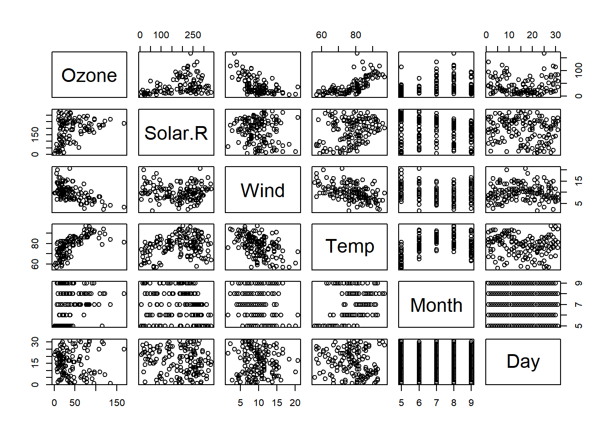
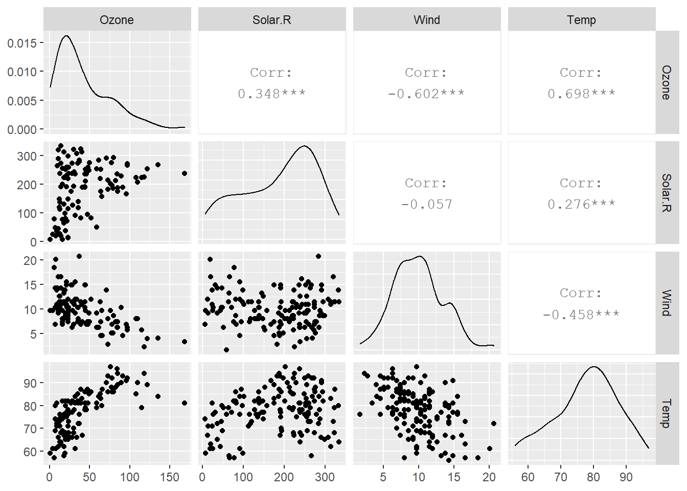
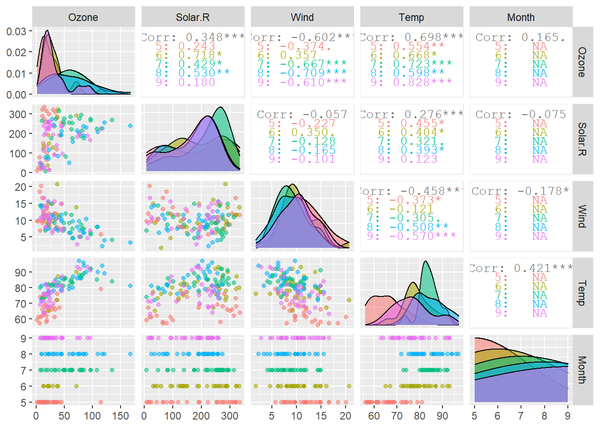

c()
[]
round()
sqrt()
exp()
log()
log10()
=
<- 快捷键(alt + _)
#计算圆形周长面积
r <- c(10,20,30,40,60)
l <- 2*pi*r
print(l)## [1] 62.83185 125.66371 188.49556 251.32741 376.99112a <- pi*r^2
print(a)## [1] 314.1593 1256.6371 2827.4334 5026.5482 11309.7336aq <- read.csv('C:\\Users\\78472\\Documents\\zuotu\\aq.csv')ozone <- aq$Ozone #$号输出列dim(aq) #行列数## [1] 153 7rownames(aq) #行名称## [1] "1" "2" "3" "4" "5" "6" "7" "8" "9" "10" "11" "12"
## [13] "13" "14" "15" "16" "17" "18" "19" "20" "21" "22" "23" "24"
## [25] "25" "26" "27" "28" "29" "30" "31" "32" "33" "34" "35" "36"
## [37] "37" "38" "39" "40" "41" "42" "43" "44" "45" "46" "47" "48"
## [49] "49" "50" "51" "52" "53" "54" "55" "56" "57" "58" "59" "60"
## [61] "61" "62" "63" "64" "65" "66" "67" "68" "69" "70" "71" "72"
## [73] "73" "74" "75" "76" "77" "78" "79" "80" "81" "82" "83" "84"
## [85] "85" "86" "87" "88" "89" "90" "91" "92" "93" "94" "95" "96"
## [97] "97" "98" "99" "100" "101" "102" "103" "104" "105" "106" "107" "108"
## [109] "109" "110" "111" "112" "113" "114" "115" "116" "117" "118" "119" "120"
## [121] "121" "122" "123" "124" "125" "126" "127" "128" "129" "130" "131" "132"
## [133] "133" "134" "135" "136" "137" "138" "139" "140" "141" "142" "143" "144"
## [145] "145" "146" "147" "148" "149" "150" "151" "152" "153"colnames(aq) #列名称## [1] "X" "Ozone" "Solar.R" "Wind" "Temp" "Month" "Day"length(aq$X)## [1] 153sum(aq$Solar.R)## [1] NAsum(aq$Solar.R, na.rm = TRUE)## [1] 27146mean(aq$Ozone)## [1] NAo3mean <- mean(aq$Ozone)
o3mean## [1] NAaq$ozone2 <- aq$Ozone - o3mean
# max()
# min()
# range() 四舍五入
# median()
# sd()
# var()tapply(aq$Ozone, aq$Month, mean)## 5 6 7 8 9
## NA NA NA NA NAsummary(aq) ## X Ozone Solar.R Wind
## Min. : 1 Min. : 1.00 Min. : 7.0 Min. : 1.700
## 1st Qu.: 39 1st Qu.: 18.00 1st Qu.:115.8 1st Qu.: 7.400
## Median : 77 Median : 31.50 Median :205.0 Median : 9.700
## Mean : 77 Mean : 42.13 Mean :185.9 Mean : 9.958
## 3rd Qu.:115 3rd Qu.: 63.25 3rd Qu.:258.8 3rd Qu.:11.500
## Max. :153 Max. :168.00 Max. :334.0 Max. :20.700
## NA's :37 NA's :7
## Temp Month Day ozone2
## Min. :56.00 Min. :5.000 Min. : 1.0 Min. : NA
## 1st Qu.:72.00 1st Qu.:6.000 1st Qu.: 8.0 1st Qu.: NA
## Median :79.00 Median :7.000 Median :16.0 Median : NA
## Mean :77.88 Mean :6.993 Mean :15.8 Mean :NaN
## 3rd Qu.:85.00 3rd Qu.:8.000 3rd Qu.:23.0 3rd Qu.: NA
## Max. :97.00 Max. :9.000 Max. :31.0 Max. : NA
## NA's :153plot(aq[, 2:7]) #散点图
new_pkg <- c('ggplot2', 'GGally')
# install.packages(new_pkg)
library('GGally')## Loading required package: ggplot2## Registered S3 method overwritten by 'GGally':
## method from
## +.gg ggplot2
ggpairs(aq[, 2:5])
ggpairs(aq[, 2:6], aes(color = factor(Month), alpha = 0.2))
# write.csv(aq, 'aq2.csv')# pdf('aq.pdf')
# ggpairs(aq[, 2:6], aes(color = factor(Month), alpha = 0.2))
# dev.off()